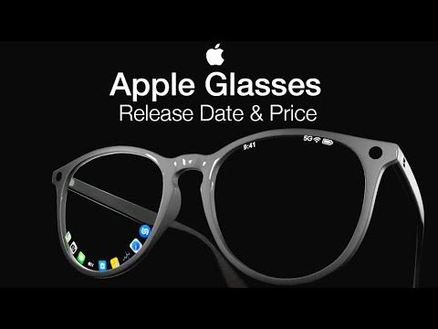

Apple plans to release smart glasses at the end of next year, Bloomberg News reported on Thursday, in the iPhone maker's latest push to diversify its product lineup and boost demand for its artificial intelligence devices.
Apple will start producing large quantities of prototypes of the devices at the end of this year with overseas suppliers, the report said, citing people with knowledge of the matter.

Apple AR Glasses features: These AR specs could send images directly into your eyes and will likely be controlled by basic taps and swipes plus your Apple iPhone.
Apple AR Glasses design: By all accounts, they look similar to a regular pair of specs, albeit with some extra sensors and features.
Apple did not immediately respond to a Reuters request for comment. The company's push into facewear comes after its Vision Pro headset saw lukewarm reception from the public due to its hefty price tag and lack of AI features.
Apple's new glasses will compete with Facebook-parent Meta's Ray-Ban smart glasses, which have become popular with consumers.
Apple also shelved plans for a smartwatch that can analyze its surroundings with a built-in camera, the report said. The company had actively been working to release a camera-equipped Apple Watch by 2027, but that work was shut down, the report added.